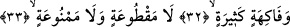
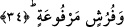
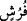
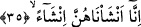

Sularının çoğu ya kuyu veya su birikintileri gibi göllerden gelirdi. Dolayısıyla suya
ancak kova ve ipi ile ulaşabilirlerdi. Bu sebeple akar su buyruldu. Onlara, isteklerine
göre havada bile akacak şekilde bol su vaadedildi.
Sanki, mukarrabûn gurubundan olan bahtiyarların hâli, medenî yaşayan şehir halkı için
düşünülebilen en üstün bir hayat standardına benzetilmiştir. Sağda olan mutlu kişilerin
hâli ise köyde oturanlar için tasavvur edilebilen en gelişmiş imkânlara sâhip olarak
yaşayanların durumuna benzetilmiştir. Böylece iki topluluk arasındaki fark haber
verilmiş olmaktadır.
32-33. Sayısız meyveler içindedirler; Tükenmeyen ve yasaklanmayan.
Çeşitleri ve cinsleri itibariyle pek çok. Dünya meyveleri gibi vakitlerden herhangi
birinde “tükenmeyen.” Yemek isteyenlere uzaklık, satın alabilmek için para
bulamamak, almaya engel rahatsız edici ağaçtaki diken veya girmeye engel duvar gibi
herhangi bir suretle “yasaklanmayan sayısız meyveler içindedirler.”
Hadis-i şerifte: “Cennet meyvelerinden koparılan her meyvenin yerine Allah bedel
olarak iki kat verir”[204] buyrulmuştur.
34. Ve kabartılmış döşekler üstündedirler.__WORD__ (füruş) kelimesi döşek anlamındaki “firâş”ın çoğuludur. Yayılıp döşenen demektir.
Âyet-i kerîmede geçen “kabartılmış, yükseltilmiş” ifâdesi, değer bakımından yüksek
veya yükseltilmiş, kabartılmış, aralarında ellibin senelik mesâfe olan yer ile gök
arasındaki yükseklik gibi yükseltilmiş demektir. Yahut tahtlar üzerinde yükseltilmiş
demektir. “Füruş” kelimesinin “kadınlar” anlamında kullanıldığını söyleyenler de
olmuştur. Çünkü Arapçada yatak, elbise, izar/peştemal gibi kelimelerin kadından kinaye
olarak kullanıldığı olur. “Çocuk doğduğu yataya âiddir”[205] hadisinde de bu mânâ
kinâye yoluyla kasdedilmiştir. Kadınların yükseltilmesi ise onların koltuklar üzerinde
bulunmalarıdır. Nitekim gelmekte olan âyet-i kerîme de bu mânâyı göstermektedir.
35. Gerçekten biz hûrileri apayrı biçimde yeni yarattık.